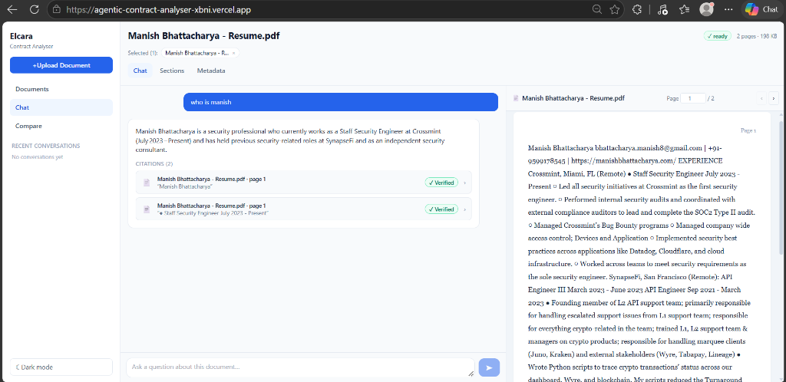

Oct 2026 · Personal Project (Solo) · Flagship
ContractLens — Agentic Legal Contract Analyser
- The LLM proposes; deterministic code disposes: Pure whitespace-tolerant verification matching model quotes against canonical document byte offsets and page numbers. Every displayed quote is verified before render — unverified text cannot reach the UI.
- Interactive citation highlighting: Clicking any citation instantly scrolls the viewer to and highlights the exact verified passage (page-correct, cross-page capable).
- Agentic research loop: ReAct loop with a hard 4-round cap and trusted server-side tool executor (
search_document,get_section,list_clauses) injecting session/document scopes to prevent jailbreaks. - Clause comparison & numeric severity: Clause-level alignment flagging numeric changes (e.g. liability cap moving $100,000 → $1,000,000 is CRITICAL regardless of identical phrasing); handles up to 5 documents simultaneously.
- 318 automated tests: 301 backend unit/integration + 17 frontend tests validating chunker invariants, quote-verification guarantees, and rate limits with Langfuse tracing.
Next.js 14TypeScript (strict)Express 5RedisBM25GeminiGroqLangfuseTailwindSSE